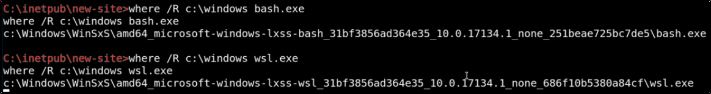

Escalation via WSL
To know if we are dealing with a WSL system, we can search for wls.exe or bash.exe

We can check for the wsl.exe using whoami:
root!

If we run bash, we are running on Windows OS:

In this case, we can try for a tty escape:

First thing to do in a Linux Enumeration is to check the history command:
we can find some sensible data like password in clear